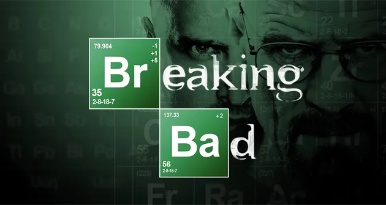
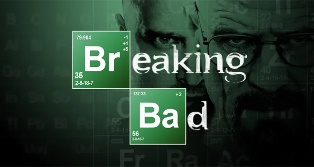

Introducción
El profesor calmado de química de una secundaria, Walter White cree que su vida no puede ser peor. Su salario apenas le alcanza para sostener a su familia, una situación que no mejora cuando su esposa da a luz y su hijo adolescente sufre de parálisis cerebral, pero Walter queda anonadado cuando se entera que tiene un cáncer terminal. Al concluir que su enfermedad iba a arruinar financieramente a su familia, él toma una decisión desesperada con el fin de ganar más dinero durante el tiempo que le queda y transforma un viejo vehículo de recreación en un laboratorio de matanfetaminas sobre ruedas.
 

Géneros
Series dramáticas, Series sobre crímenes, Series de EE. UU. y Thrillers de TV.
Esta serie es...
Violento, Crudo, De intriga, Genialidad incomprendida, Aclamado por la crítica, Sombrío, Líder del narco, Drama y Serie.
Creadores:
Vince Gilligan
Actores principales:
Bryan Cranston (Walter White), Aaron Paul (Jesse Pinkman), Anna Gunn (Skyler White), Dean Norris (Hank Schrader), Giancarlo Esposito (Gus Fring).
Idioma:
Español, Inglés, Francés, Alemán, Italiano, Portugués, Ruso y Japonés.
Rodada en:
Albuquerque, Nuevo México, EE. UU.
Concepción
Breaking Bad fue creada por Vince Gilligan, quien previamente había trabajado como guionista en la serie The X Files, de Fox. Gilligan quería crear una serie en la que el protagonista se convirtiera en el antagonista. En una entrevista, dijo: "Históricamente, en la televisión los guionistas se esfuerzan por mantener a los personajes siempre iguales durante años o incluso décadas. Cuando noté esto, el siguiente paso lógico era pensar en cómo podría hacer un programa cuyo principal tema fuese el cambio".
El concepto surgió durante una conversación entre Gilligan y su colega guionista Thomas Schnauz, quienes, bromeando, dijeron que si se quedasen sin trabajo la solución sería "armar un laboratorio de metanfetamina dentro de un vehículo de recreación e ir por todo el país cocinando cristales y ganando dinero".